随着微软放弃.Net MF ,通过C#编写STM32 平台上的程序变得渺茫， 但是， 别着急， 目前至少有两个社区在做这件事情， 传承了微软的.Net MF , 一家是 nanoframework,另外一家比较封闭的是
GHI Electronics 地址是: https://github.com/ghi-electronics GHI只支持自家设计生产的开发板， 不支持STM32其他厂商的开发板。因此最佳选择我认为是 nanoframework。
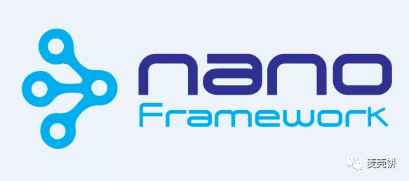
实现Hello World 之前， 我们需要做以下几步:
一、安装VS2019 ，在扩展菜单中搜索 nanoframework
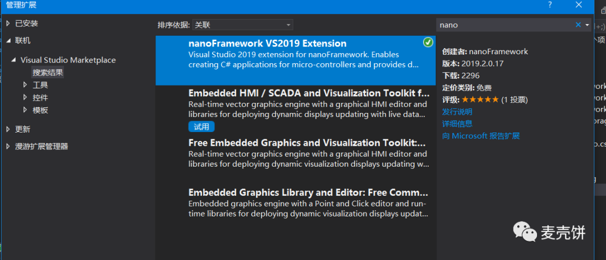
二、选择开发板
选择开发板很重要， 直接意味着你是不是能完成这件事， 比如笔者， 买了三个开发板， 一个型号不对， 一个快递丢了， 最后只有一个能用， 型号是STM32F411E-DISCO,他是是ST公司推出的一款针对STM32F411设计的开发板，可帮助您探索STM32F4系列，轻松开发自己的应用，还提供有完善的资料能帮助所有初学者和有经验开发人员快速上手。STM32F411E-DISCO基于STM32F411VET6设计，集成了ST-LINK/V2仿真下载器（但仅对外提供SWD接口），免除您另外采购仿真器或下载器的麻烦；还增添了陀螺仪、电子罗盘、数字麦克风、音频解码芯片、OTG USB、 LED和按钮等外设，方便您学习开发。。详细资料你可以访问 https://www.st.com/zh/evaluation-tools/32f411ediscovery.html 来了解！
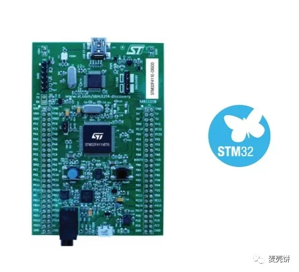
三、烧写nanoframework
- 从ST官网下载 STM32 ST-LINK Utility 并安装到你的计算机。
- 要下载文章中指定的这款开发板固件， 需要前往 https://bintray.com/nfbot/nanoframework-images-community-targets/ST_STM32F411_DISCOVERY/_latestVersion 下载， 如果其他开发板请前往 https://github.com/nanoframework/nf-Community-Targets 或者 nanoFramework 下载开发板的固件 ， 连接会最终会引导你到 JFrog Bintray 库下载预编译好的nanoframework zip压缩包，下载完成后 然后解压他。
- 最好是通过两根micro USB 连接线连接， 一根是USB type A 公口，mini-B 公口，用来通过TAG连接 ST-Link调试器， 另外一根用来更好的供电， 但低电量模式也是可以的，另外一个可以是 USB type A 公口，micro-B 公口，用来补充电能。
- 启动 e ST-LINK Utility 连接你的ST开发板.
- 使用 “full chip erase” 清除闪存.
- 文件中选择刚解压的压缩包中的文件 nanoBooter.hex ， 然后点 “Program and verify” 按钮， 在点‘Start’按钮之前确保选中”Reset after programming” ， 然后你可能可以看到 开发板上的led闪烁速度比以前较慢。
- 紧接着， 打开文件nanoCLR.hex ， 同样点击 “Program and verify” 按钮，并确保 “Reset after programming” 选中后再点击 “Start”， 然后上传完成， MCU已经充值并且nanoCLR镜像将开始运行， 这时候LED灯不再闪烁，
四、通过串口连接你到VS
在能通过VS调试之前， 你需要一个 串口转USB的适配器，将PA2 接在 USART2_TX, PA3 接在USART2_RX 并且将 GND 也同样接在开发板上。 我选择的设备信号是 FT232 USB UART Board (mini) ， 如果你身边有同类的， 则不需要， 之所以买它是因为手头没有杜邦线，他具备如下特性:
采用原装FT232RL
支持Mac、Linux、Android、WinCE、Windows 7/8/8.1/10…
支持3种供电模式：5V对外供电；3.3V对外供电；由外部供电（要求3.3V-5V）
带3个LED：TXD LED、RXD LED、POWER LED
TXD、RXD、RTS#、CTS#：采用弯排针引出
其余功能PIN：预留焊盘（配送排针、排座，可上插或下插接入用户系统；PIN间距支持插入万用板）
用说明:
VCCIO：输出3.3V或5V（模块由USB供电，须将跳线帽跳到3.3V或5V）
GND：接GND
TXD：接MCU.RX （ 信号流向：MCU.RX << FT232 << PC.TX ）
RXD：接MCU.TX （ 信号流向：MCU.TX >> FT232 >> PC.RX ）
RTS：接MCU.CTS （ 信号流向：MCU.CTS << FT232 << PC.RTS ）
CTS：接MCU.RTS （ 信号流向：MCU.RTS >> FT232 >> PC.CTS ）
注意：本产品不带USB线。该模块为USB转TTL电平，切勿直连RS232电平，以免烧坏模块。我购买的型号如下图所示:
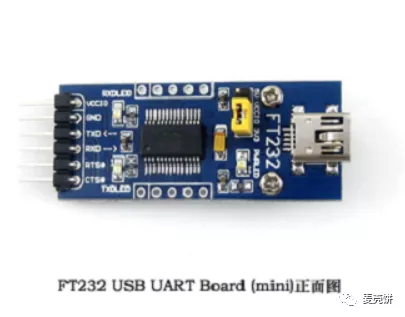
整体连接起来示意图如下:
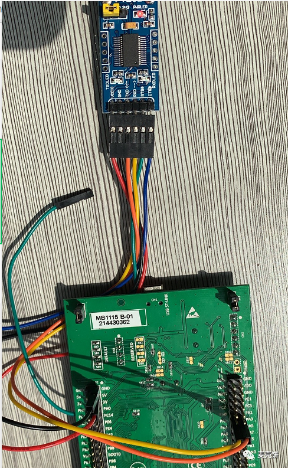
红线接电 ， 黑线接地， 橙色线接PA3， 黄色线接在PA2,
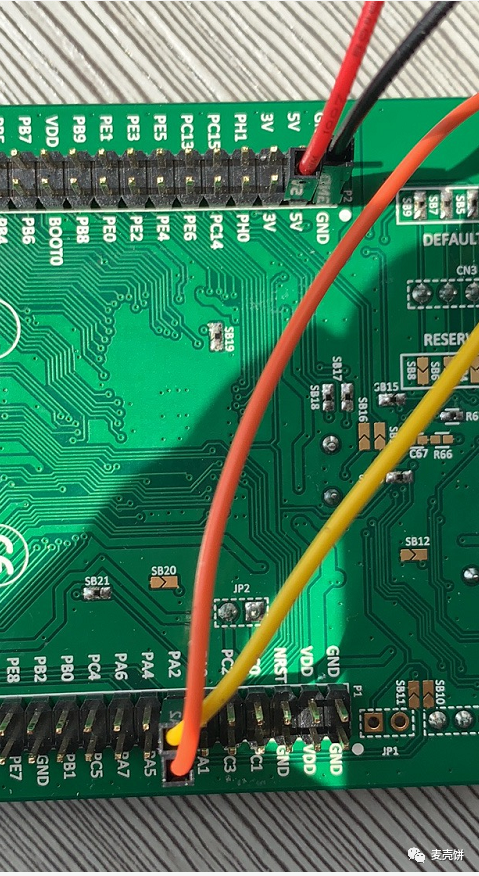
USB type A公口接笔记本， mini-B 公口从开发板上拔下来， 接在串口转USB的接口上。
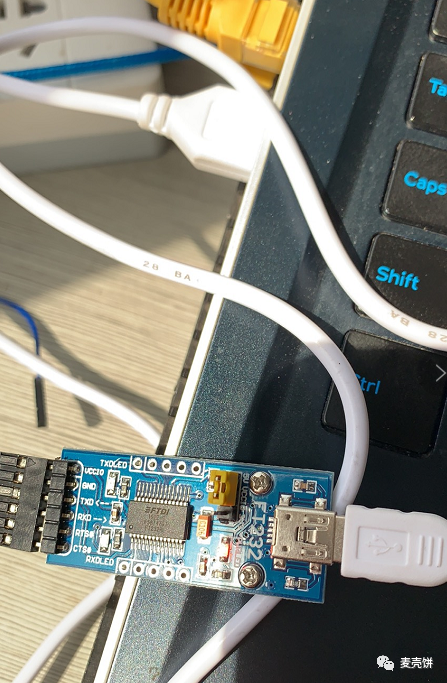
五，VS中查找设备:
启动VS2019 , 确保之前扩展已经装好， 然后在视图菜单的 其他窗口中找到 Device Explorer ，如下图所示:
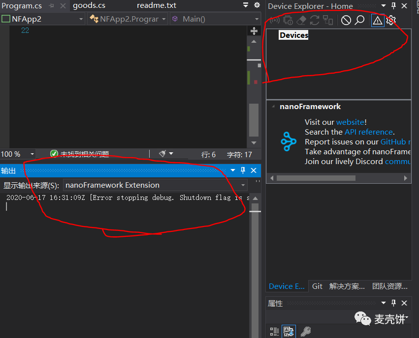
插上我们的开发板， 稍等片刻后自动寻找到开发板, 如下图所示:
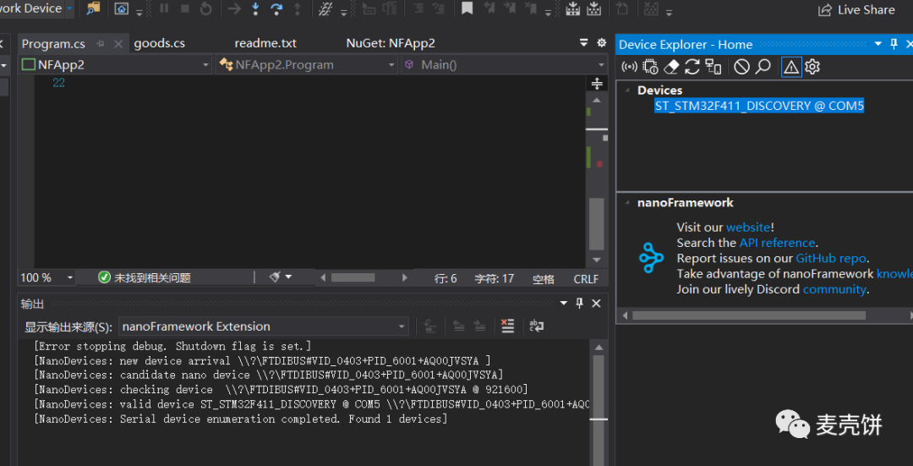
现在开始， 我们创建第一个项目Hello World ,
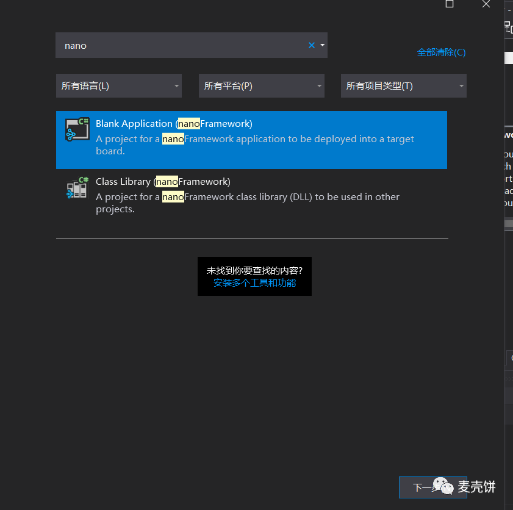
创建后， 第一件事情应该是进nuget管理器中， 将 nanoFramework.CoreLibrary 升级为 最新版本，
如下图:
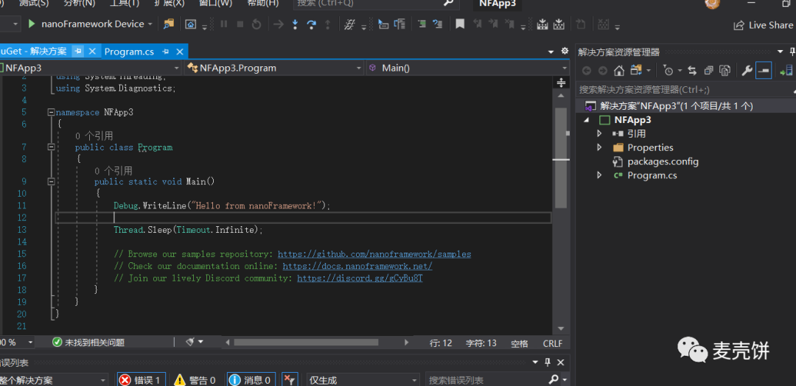
开始运行
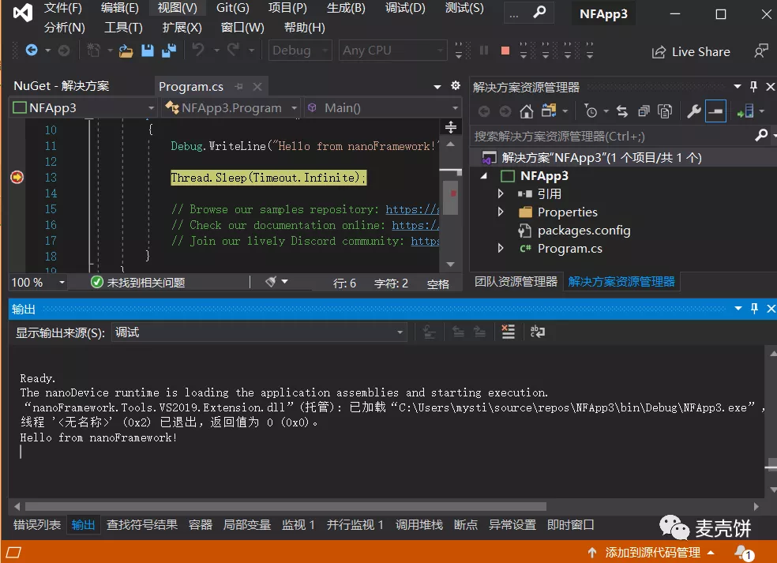
此时， 你的第一个 在STM32上的C# Hello World 完成。